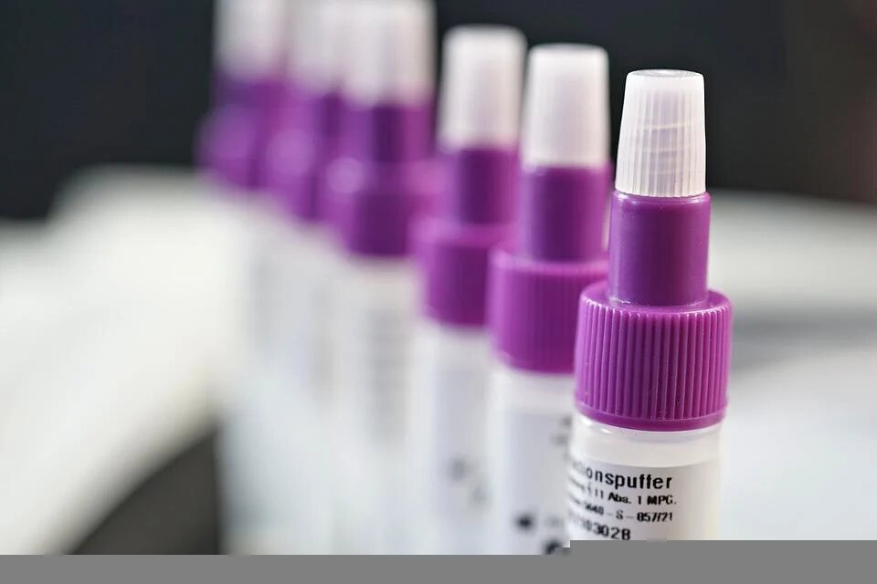

Christian the Analyst Portfolio
Data analyst skilled in Python, PowerBi and SQL @chrissny88
Python foundation
Cred-Pay: Organise the data so that, it will be easily accessible and help the company predict, if the application can be accepted for a credit card or not

Numpy and Pandas
MovieLens: A detailed analysis of the data, and come up with some meaningful insights which will help the company to address users in a better way.

Python for Visualisation
Honey Production: To visualize how honey production has changed over the years (1998–2016) in the United States.

Exploratory Data Analysis
Uber: Extracting actionable insights from data that will help in the growth of the the business.

Exploratory Data Analysis
FoodHub: Analysis of data to get a fair idea about the demand of different restaurants which will help in enhancing customers experience. Skills and Tools: Exploratory Data Analysis (Variable Identification, Univariate analysis, Bi-Variate analysis), Python.
Business Statistics
Medicon: Analyzing random samples collected from the batch, to infer the quality (whether a dose will do a satisfactory job or not) and time of effect of a particular batch.
Business Statistics
Talent Hunt Examination: A2Z institute wants to provide an estimate of the average score obtained by aspirants who enroll in their program. Keeping in mind the variation in scores every year, the institute wants to provide a more reliable estimate of the average score using a range of scores instead of a single estimate.
Business Statistics
Diet plans: In order to understand the effectiveness of each of the different diets for weight loss,we have been asked to perform a statistical analysis to find evidence of whether the mean weight losses with respect to the three diet plans are significantly different.
Business Statistics
ENews express: This project used statistical analysis, a/b testing, and visualization to decide whether the new landing page of an online news portal (E-news Express) is effective enough to gather new subscribers or not. The simulated dataset has certain important metrics such as converted status and time spent on the page that will help to conclude the effectiveness of the new landing page. Apart from that, the dependence of conversion on the preferred language will also be analyzed in this project.. Skills and Tools: Hypothesis Testing, a/b testing, Data Visualization, Statistical Inference.
Supervised Machine Learning - Regression
ReCell: Analyze the used devices dataset, build a model which will help develop a dynamic pricing strategy for used and refurbished devices, and identify factors that significantly influence the price. # Skills and Tools: EDA, Linear Regression, Linear Regression assumptions, Business insights and recommendations.
Supervised Machine Learning - Classification
INN Hotels: Analyze the data of INN Hotels to find which factors have a high influence on booking cancellations, build a predictive model that can predict which booking is going to be canceled in advance, and help in formulating profitable policies for cancellations and refunds. # Skills and Tools: EDA, Data Pre-processing, Logistic regression, Multicollinearity, Finding optimal threshold using AUC-ROC curve, Decision trees, Pruning.
Ensemble Techniques
EasyVisa: Analyze the data of Visa applicants, build a predictive model to facilitate the process of visa approvals, and based on important factors that significantly influence the Visa status recommend a suitable profile for the applicants for whom the visa should be certified or denied. # Skills and Tools: EDA, Data Preprocessing, Customer Profiling, Bagging Classifiers (Bagging and Random Forest), Boosting Classifier (AdaBoost,Gradient Boosting,XGBoost), Stacking Classifier, Hyperparameter Tuning using GridSearchCV, Business insights
Model Tuning
ReneWind: "ReneWind" is a company working on improving the machinery/processes involved in the production of wind energy using machine learning and has collected data of generator failure of wind turbines using sensors. The objective is to build various classification models, tune them and find the best one that will help identify failures so that the generator could be repaired before failing/breaking and the overall maintenance cost of the generators can be brought down. # Skills and Tools: Up and downsampling, Regularization, Hyperparameter tuning, Business insights
Unsupervised Machine Learning
Trade&Ahead: Analyze the stocks data, grouping the stocks based on the attributes provided, and sharing insights about the characteristics of each group. # Skills and Tools: EDA, Kmeans Clustering, Hierarchical Clustering, Cluster Profiling,Business Insight
Exploratory Data Analysis
Lost to follow up: Analysing patient data to find the association between loss to follow up patients and data entry delay. Fore each quarter,each program, each health center, what is the loss to follow up rate and data entry delay. For each program, associate LTFU and data entry delay.. # Skills and Tools: EDA, matplotlib,data analysis,data visualization,pandas
Supervised Machine Learning
Cyarubare Health center: A new maternity wing was built in Cyarubare health center and started to be used in November 2020, I assessed if there was a significant increase of deliveries in Cyarubare and if there was also an increase compared to other health facilities. . # Skills and Tools: Data Preprocessing, EDA, data visualization, Hypothesis testing, descriptive statistic
Time Series Forecasting
Patients Forecasting:I performed time series forecasting analysis using seasonal autoregressive integrated moving average(SARIMA) on different indicators to predict the number patients to expect in 2023. The analysis involves building models through historical analysis and using them to make observations and drive future strategic decision-making. . # Skills and Tools: Data Preprocessing, Data visualization, SARIMA
Supervised Machine Learning
Insurance Claim Prediction:CarIns is a startup that provides insurance for cars. It is one of the best car insurance brands known for the highest claim settlement ratio. It was launched back in Oct 2020 and acquired its initial policyholders by providing a hassle-free claim process, instant policy issuance, and claim settlements at minimum coverages. As it's a fast growing startup, the company would like to optimize the cost of the insurance by identifying the policyholders who are more likely to claim in the next 6 months. # Skills and Tools: EDA, Data Preprocessing, Customer Profiling, Bagging Classifiers (Bagging and Random Forest), Boosting Classifier (AdaBoost,Gradient Boosting,XGBoost), Stacking Classifier, Hyperparameter Tuning using GridSearchCV
Neural Network
Bank Churn Prediction:build a neural network based classifier that can determine whether a customer will leave the bank or not in the next 6 months. # Skills and Tools: EDA, Data Preprocessing, Customer Profiling,Keras,Tensorflow,ANN
Get in touch
-
Email
chrissny88@gmail.com -
Phone
+250 782 100 841 -
Address
Kigali-Rwanda -
Social Media